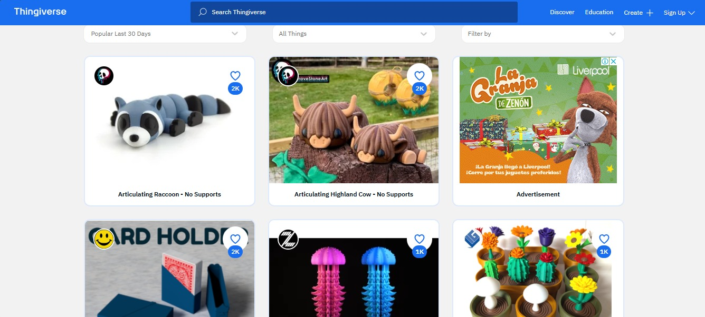
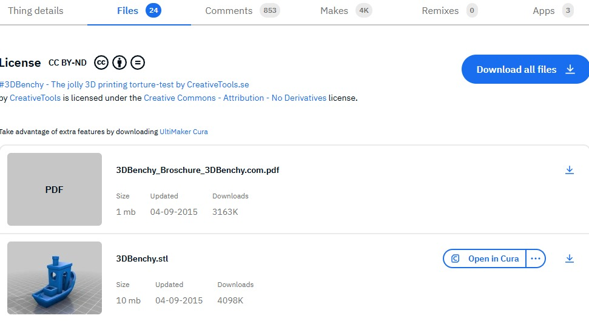

Donde conseguir un archivo?
Necesitamos conseguir un archivo, y eso lo podemos hacer visitando una pagina publica y dedicada para la impresion 3D. Thikiverse.com
Podremos encontrar una barra de busqueda para conseguir nuestro archivo, hagamos la busqueda de un archivo llamado Benchy
A continuacion podemos observar como es la pagina, encontramos archivos recomendados y en la parte superior la barra de busqueda, donde debemos ingresar nuestro interes, en este caso "benchy"

Una vez realizada la busqueda podemos seleccionar el archivo de nuestro agrado, para temas demostrativos el archivo elegido sera el siguiente
Llegados a este punto, podemos encontrar los datos del archivo, imagenes, comentarios, creaciones de otros usuarios y lo que nos interesa; el archivo propio, encontrado en la seccion "files" podemos descargarlo y usarlo

En dicha pagina; thinkiverse, podemos encontrar una infinidad de archivos de diferentes temas y gustos, la unica desventaja de esta pagina es que se maneja en el idioma; ingles, sin embargo, podemos encontrar muchas accesibilidades gracias a ella